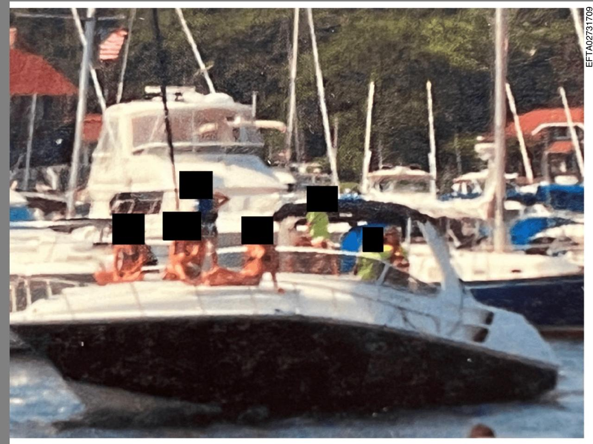
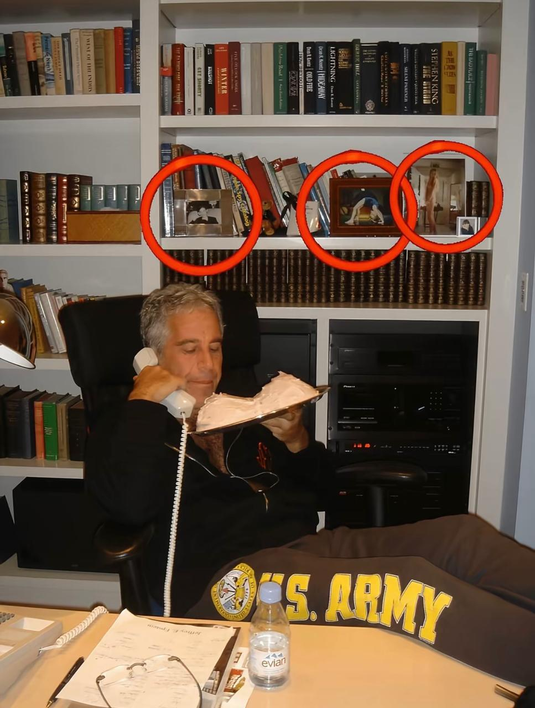
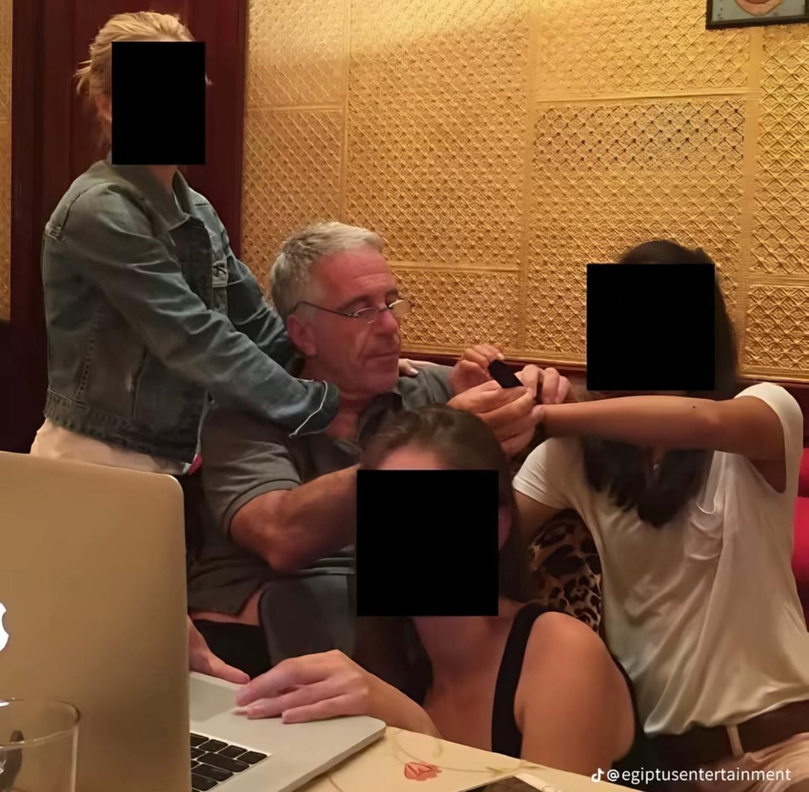
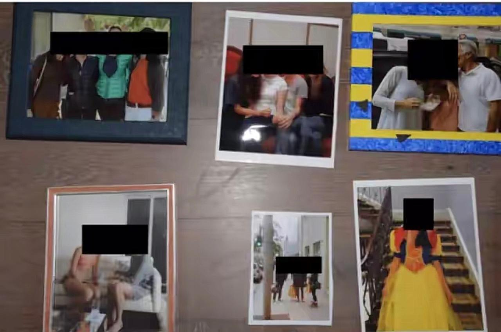
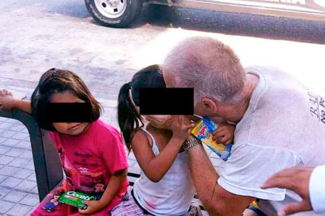
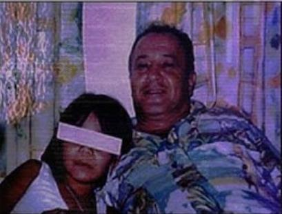

Realidad y Derechos en la Adolescencia
Lamentablemente existen muchos adolescentes que no pueden expresar felizmente esta frase significativa. Tanto en un contexto mundial como nacional, los derechos humanos de los adolescentes son un tema importante y delicado. A continuación, se mencionan algunos de los derechos que no se han respetado y estadísticas relevantes:
• Derecho a una vida libre de violencia: Muchos adolescentes son víctimas de violencia física, psicológica y sexual.
• Derecho a la educación: Algunos adolescentes enfrentan barreras para acceder a la educación, especialmente en zonas rurales o marginadas.
• Derecho a la salud: La falta de acceso a servicios de salud y la discriminación en la atención médica son problemas comunes.
• Derecho a la participación: Los adolescentes a menudo no tienen voz ni voto en decisiones que afectan su vida.
¿Quién era Jeffrey Epstein? Era un financiero estadounidense que acumuló una enorme riqueza; era conocido por su estilo de vida extravagante y por estar rodeado de personas con mucho poder e influencia en la política, ciencia y espectáculo.




Los conflictos legales de Epstein comenzaron en 2005 en Palm Beach, Florida, tras denuncias de que les pagaba a menores de edad por "masajes" que se volvían abusos sexuales.
En julio de 2019 Epstein fue arrestado nuevamente en Nueva York por cargos federales de tráfico sexual de menores.
Ghislaine Maxwell fue condenada a 20 años de prisión por ayudar a Epstein a capturar y preparar a las menores.
Este caso empieza cuando se denunció la existencia de un "ejército" de aproximadamente 2 mil niños, niñas y adolescentes en situación de calle.


Después surge una investigación en la cual se señaló que turistas y locales frecuentaban la zona buscando sexo pagado con menores.
Este caso se sitúa en el contexto más amplio de la explotación infantil turística en México.